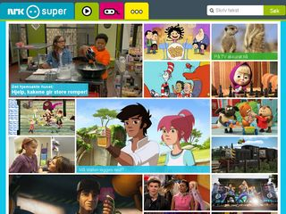

Målgrupper
Når du skal designe en nettside må du tenke på hvem nettsiden er rettet mot. Da må man tenke på farger, utsende og hvor lett siden er å navigere. Når du skal ha en spesifikk mål gruppe må du tenke på hvordan nettsiden skal se ut, for eksempel hvis du skal lage en nettside til eldre må du kanskje tenke på skrift størrelse og at alt er ryddig og lett å navigere.

Ett eksempel på en nettside som tar målgruppe seriøst er nrksuper der man kan se at det er en enkel layout som gjør det lett for barn å navigere seg rundt på siden. Nettside er også laget i lyse farger slik at, nettsiden skal framstå som posetiv og spenende for barn.